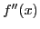
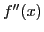
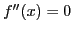
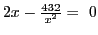

Next: Problems Up: Maxima, minima and inflection Previous: Examining a function for Contents Index
From (8.1), it is clear that in the vicinity of a maximum value of  , in
passing along the graph from left to right,
, in
passing along the graph from left to right,
 changes from
changes from  to 0 to
to 0 to  .
Hence
.
Hence  is a decreasing function, and by §8.3 we know that its derivative, i.e. the second derivative ()
of the function itself, is negative or zero.
is a decreasing function, and by §8.3 we know that its derivative, i.e. the second derivative ()
of the function itself, is negative or zero.
Similarly, we have, from (8.2), that in the vicinity of a minimum value of 
 changes from
changes from  to 0 to
to 0 to  .
Hence
.
Hence  is an increasing function and by §8.3 it follows that  is positive or zero.
is an increasing function and by §8.3 it follows that  is positive or zero.
The student should observe that is positive not only
at minimum values but also at ``nearby'' points,  say, to
the right of such a critical point. For, as a point
passes through P in moving from left to right,
slope
is an increasing function.
At such a point the curve is said to be concave upwards.
Similarly, is negative not only at maximum points
but also at ``nearby ''points,
say, to
the right of such a critical point. For, as a point
passes through P in moving from left to right,
slope
is an increasing function.
At such a point the curve is said to be concave upwards.
Similarly, is negative not only at maximum points
but also at ``nearby ''points,  say, to the left of such
a critical point. For, as a point passes through
say, to the left of such
a critical point. For, as a point passes through  ,
slope
is a decreasing function.
At such a point the curve is said to be concave downwards.
,
slope
is a decreasing function.
At such a point the curve is said to be concave downwards.
At a point where the curve is concave upwards we sometimes say that the curve has a ``positive bending,]] and where it is concave downwards a ``negative bending.''
We may then state the sufficient conditions for maximum and minimum
values of  for certain values of the variable as follows:
for certain values of the variable as follows:
When , or does not exist, the above process fails, although there may even then be a maximum or a minimum; in that case the first method given in the last section still holds, being fundamental. Usually this second method does apply, and when the process of finding the second derivative is not too long or tedious, it is generally the shortest method.
Solution. .
First step. .
Second step. .
Third step. .
Fourth step. . Hence , minimum value.
In SAGE:
[fontsize=\small,fontfamily=courier,fontshape=tt,frame=single,label=\sage]
sage: x = var("x")
sage: f(x) = x^2 + 432/x
sage: f1(x) = diff(f(x),x); f1(x)
2*x - 432/x^2
sage: f2(x) = diff(f(x),x,2); f2(x)
864/x^3 + 2
sage: crit_pts = solve(f1(x) == 0,x); crit_pts
[x == 3*sqrt(3)*I - 3, x == -3*sqrt(3)*I - 3, x == 6]
sage: x0 = crit_pts[2].rhs(); x0
6
sage: f2(x0)
6
sage: f(x0)
108
This tells us that is a critical point and that
,
so it is a minimum.
The work of finding maximum and minimum values may frequently be simplified by the aid of the following principles, which follow at once from our discussion of the subject.
Hence, in determining the critical values of x and testing for maxima and minima, any constant factor may be omitted.
When  is negative,
is negative,
 is a maximum when
is a maximum when  is
a minimum, and conversely.
is
a minimum, and conversely.
Hence a constant term may be omitted when finding critical values of
 and testing.
and testing.
In general we must first construct, from the conditions given in the problem, the function whose maximum and minimum values are required, as was done in the two examples worked out in §8.1. This is sometimes a problem of considerable difficulty. No rule applicable in all cases can be given for constructing the function, but in a large number of problems we may be guided by the following
General directions.
david joyner 2008-08-11